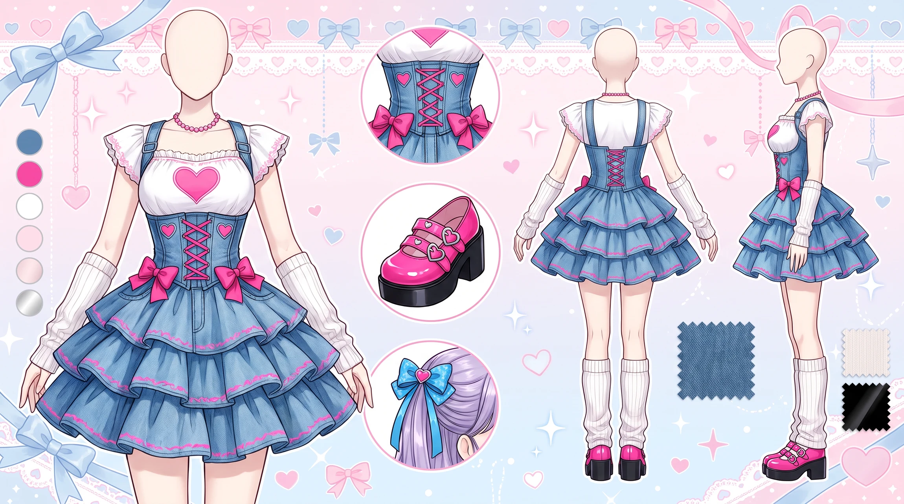
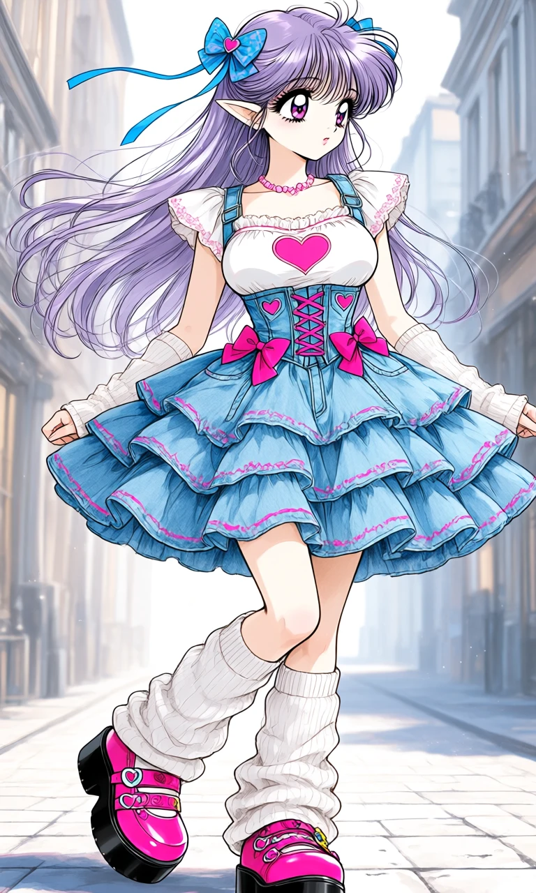

Denim Heartbeat

Outfit Prompt
An adorable, feminine kawaii-inspired outfit combining light-wash denim, bright pink accents, layered ruffles, and playful heart-shaped decorations.
A white short-sleeved top is worn underneath the dress, featuring delicate ruffled edges and a prominent pink heart motif centered on the chest. The soft white fabric creates a charming contrast against the structured denim outer layer.
The main garment is a light-wash denim dress with a fitted, structured corset-inspired bodice. Bright pink lace-up detailing runs vertically down the center front, accompanied by decorative pink bows positioned on either side of the bodice. Small heart-shaped accents and delicate cutout details decorate the upper portion of the dress.
The fitted waist flares outward into a voluminous, multi-tiered ruffled skirt. Several layers of light-wash denim ruffles cascade down the skirt, with each tier finished in bright pink piping or decorative stitching. The contrasting pink trim emphasizes the layered construction and creates a playful, rounded silhouette.
A delicate pink beaded or pearl-style choker necklace decorates the neckline, complementing the pink heart and ribbon details throughout the outfit.
White fingerless arm warmers extend over the hands and lower arms, featuring a soft, comfortable texture that adds a cozy layered element to the ensemble.
White crew socks are paired with thick, scrunched white leg warmers, loosely gathered around the ankles and lower calves to create a soft, voluminous appearance.
Chunky bright-pink platform shoes feature multiple decorative straps, cute bows, and playful ornamental details. Thick black platform soles provide a bold contrast to the bright-pink uppers, creating a tall, exaggerated kawaii footwear silhouette.
Hair accessories include two decorative blue hair bows positioned on opposite sides of the head, accompanied by a long blue ribbon trailing gracefully from one side. The bows and ribbon can be incorporated into different hairstyles.
The complete ensemble combines structured denim, delicate white layers, bright pink lace-up details, heart motifs, cascading ruffles, and chunky platform footwear. Its playful color palette and charming accessories create a sweet, fashionable kawaii-inspired look.
Outfit Examples

